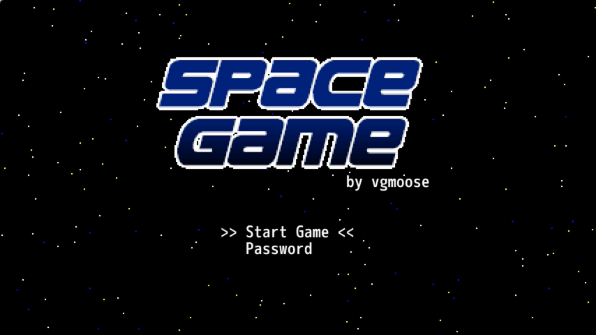
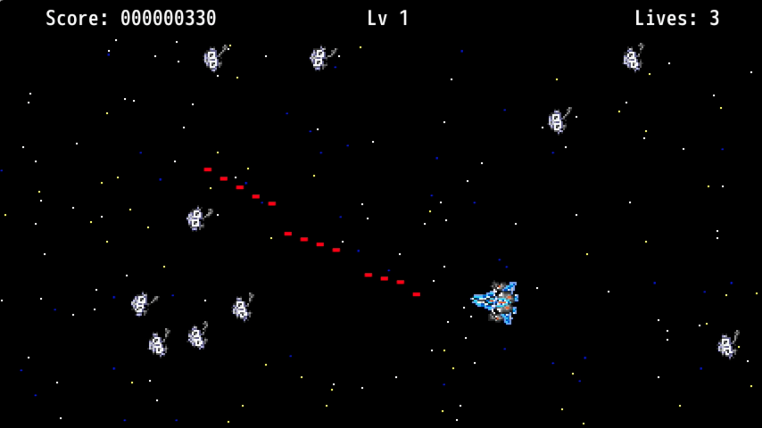

On Feb 9 2016 I released a little homebrew app for the Wii U called Space Game! Here's a video of me playing it.
You can play the game on the latest 5.5.0/5.5.1 Wii U firmwares by going to space.vgmoose.com. I've written a couple of posts about it on gbatemp and reddit. The source code is available on my github.


Please enjoy! I hope to one day make my splash as a real developer on a Nintendo console, but until then, this homebrew stuff is the only card I can play.